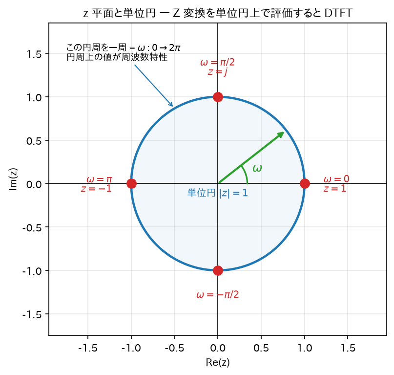
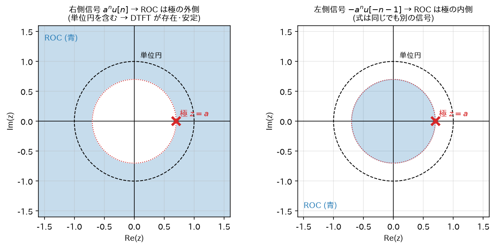
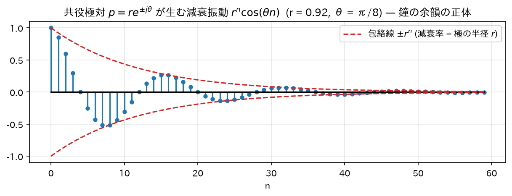

Chapter 05
Z 変換 — IIR 解析の中核ツール
IIR フィルタの設計・解析はほぼすべて Z 変換の上で行われる。ここが本シリーズの数学的な山場。
身構える前に: Z 変換は「DTFT の守備範囲を広げただけ」. 04 章の DTFT には弱点があった。足すと無限大になってしまう信号には使えないのである。 ところが IIR フィルタの解析では、まさにその「発散する信号」（設計に失敗して暴走したフィルタの応答など）も 扱いたい。壊れた機械を調べるのに「壊れた機械には使えない測定器」しかないのでは困る。
そこで一工夫する。発散する信号にオモリを付けて、無理やり収束させてから DTFT する。 このオモリの強さを調節できるようにしたものが Z 変換である。それだけ。
そして「どのくらいの強さのオモリなら収束するか」という記録が、この章で一番の難所である ROC（収束領域） の正体になる。順を追えば怖くない。
1. 定義と動機
定義
信号\(x[n]\)の（両側）Z 変換:
なぜ DTFT だけでは足りないのか
DTFT は\(\sum_n |x[n]| < \infty\)の信号にしか使えない。 ところが IIR の解析では発散するかもしれない信号（不安定なフィルタのインパルス応答など）も扱いたい。
そこで\(z = r e^{j\omega}\)と置いてみると:
これは「\(x[n]\)に減衰の重み\(r^{-n}\)を掛けてから DTFT したもの」。 \(x[n]\)が発散する信号でも、\(r\)を十分大きく取れば\(x[n]r^{-n}\)は収束させられる。 つまり Z 変換は「重み付きで無理やり収束させられるようにした DTFT の拡張」である。
DTFT との関係
\(r = 1\)、すなわち\(z = e^{j\omega}\)（単位円上）と置くと:
Z 変換を複素平面全体で定義しておき、単位円の上をなぞると周波数特性が読める。
この絵は今後ずっと使う。\(z\)平面の単位円を反時計回りに一周することが「\(\omega\)を\(0\)から\(2\pi\)まで動かす」ことに対応する。

2. 収束領域(ROC)
Z 変換の級数が絶対収束する\(z\)の集合を ROC (Region of Convergence) と呼ぶ。 同じ式でも ROC が違えば別の信号を表すので、Z 変換は常に ROC とセットで考える。
ROC とは何か、なぜ必要か（一番の難所なので丁寧に）.
① ROC は「どのくらいのオモリなら効いたか」の記録である。 上で見たとおり、Z 変換は信号に\(r^{-n}\)というオモリを掛けてから DTFT したもの（\(z = re^{j\omega}\)の\(r\)がオモリの強さ）。 オモリが弱すぎれば和は発散したままだし、強すぎても別の意味で発散することがある。 うまく収束してくれた\(r\)の範囲——それが ROC。複素平面上では「ドーナツ状の領域」として描かれる。
② なぜ「式だけ」ではダメなのか. これから見るように、まったく違う 2 つの信号が、まったく同じ数式の Z 変換を持つことがある。 数式だけ渡されても、元の信号がどちらだったか区別できない。区別する情報が ROC である。 「\(\sqrt{4} = \pm 2\)のどちらか、は式だけでは決まらない」のと似た状況で、 式 + ROC の 2 点セットで初めて 1 つの信号が定まる。
③ 実用上、ROC はたった 1 つのことを教えてくれる。 込み入って見えるが、フィルタ屋にとって ROC の使い道はほぼ 1 つだけ: 「ROC が単位円（\(|z|=1\)）を含むか?」= 「そのフィルタは安定か?」。 \(|z|=1\) とは「オモリを一切掛けない（\(r=1\)）」ということ。 オモリ無しで和が収束する = 素の信号がちゃんと減衰している = 安定、というわけである。 この 1 点だけ押さえておけば、以下の細かい話は後から効いてくる。
例 1: 右側信号\(x[n] = a^n u[n]\)（導出）
公比\(az^{-1}\)の等比級数なので、収束条件は\(|az^{-1}| < 1 \Leftrightarrow |z| > |a|\)。このとき:
ROC は「半径\(|a|\)の円の外側」。
例 2: 左側信号\(x[n] = -a^n u[-n-1]\)（導出）
\(u[-n-1]\)は\(n \leq -1\)で 1。つまりこの信号は「過去にだけ存在」する:
\(m = -n\)（\(n = -1 \to m = 1\)、\(n \to -\infty \to m \to \infty\)）と置換:
公比\(a^{-1}z\)の等比級数（初項は\(m=1\)から）。収束条件は\(|a^{-1}z| < 1 \Leftrightarrow |z| < |a|\)。 \(\sum_{m=1}^\infty r^m = \frac{r}{1-r}\)（\(\sum_{m=0}^\infty r^m = \frac{1}{1-r}\)から\(m=0\)の項 1 を引いた）を使うと:
例 1 と完全に同じ式になった。違いは ROC だけ:
| 信号 | 式 | ROC |
|---|---|---|
| \(a^n u[n]\)（未来へ減衰） | \(\frac{1}{1-az^{-1}}\) | \(\lvert z\rvert > \lvert a\rvert\)（円の外側） |
| \(-a^n u[-n-1]\)（過去へ伸びる） | \(\frac{1}{1-az^{-1}}\) | \(\lvert z\rvert < \lvert a\rvert\)（円の内側） |
ROC の性質（重要なものだけ）
- 右側信号（因果的信号）の ROC は最も外側の極より外側（例 1 のパターン）。
- 左側信号の ROC は最も内側の極より内側（例 2 のパターン）。
- ROC が単位円\(|z|=1\)を含む ⟺ DTFT が存在 ⟺ システムなら BIBO 安定。 （理由:\(|z|=1\)上で絶対収束 ⟺\(\sum_n |x[n] \cdot 1^{-n}| = \sum_n |x[n]| < \infty\)。これは 03 章の安定条件そのもの。）
直感: ROC は「どのくらい強い減衰の重み\(r^{-n}\)を掛ければ和が収束するか」の記録。 因果的な信号は未来方向に伸びるので、外側（強い減衰重み）で収束する。

3. Z 変換の性質(すべて導出)
(a) 線形性
（ROC は少なくとも両者の ROC の共通部分。）
(b) 時間シフト — IIR で最も重要な性質
\(m = n - n_0\)と置換（\(n = m + n_0\)）:
直感: \(z^{-1}\)は「1 サンプル遅延」の記号。ブロック図で遅延素子を\(z^{-1}\)と書くのはこのため。 差分方程式（\(y[n-1]\)などを含む式）が Z 領域では多項式の掛け算になる。これが 06 章で伝達関数を作る鍵。
(c) 畳み込み定理
和の順序交換、\(z^{-n} = z^{-k} z^{-(n-k)}\)と分解、内側で\(m = n-k\)と置換:
（DTFT の畳み込み定理の導出と同じ流れ。ROC は両者の共通部分を含む。）
(d) 指数重み（z 領域スケーリング）
直感: 時間領域で\(a^n\)を掛けると、\(z\)平面の極や零点がすべて\(a\)倍の位置に移動する。 「減衰を強くする = 極を原点に引き寄せる」という操作に対応。
(e) z 領域微分
\(X(z) = \sum_n x[n] z^{-n}\)を\(z\)で微分する（収束域内では項別微分が許される）:
両辺に\(-z\)を掛ける:
用途: 重根（多重極）を持つ場合の逆変換で使う。
応用例（導出）:\(x[n] = n a^n u[n]\)の Z 変換。 \(X(z) = \frac{1}{1-az^{-1}}\)（\(a^n u[n]\)のもの）に (e) を適用:
（商の微分法則を使用。）よって:
4. 逆 Z 変換 — 部分分数展開法
IIR の伝達関数は\(z^{-1}\)の有理関数（多項式 ÷ 多項式）になるので、 逆変換は部分分数展開でほぼ機械的にできる。手順を実例で示す。
何のためにやるのか. Z 変換した後の世界（\(X(z)\)）は計算がしやすいが、 最後は「で、実際の波形はどうなるの?」という時間の世界に戻ってきたい。その帰り道が逆 Z 変換である。
ただし帰り道の計算を真面目にやると複素積分（留数定理）が必要になり、非常に面倒。 そこで賢い抜け道を使う: 複雑な分数を、答えを知っている簡単な分数の足し算にバラす。 \(\frac{1}{1-az^{-1}}\)という形なら「\(a^n u[n]\)」と答えが分かっている（§2 の例 1）ので、 どんなに複雑な\(X(z)\)も、この形の足し算に分解できれば、あとは各項を答えに置き換えて足すだけで済む。
中学で習った「\(\frac{1}{x(x+1)} = \frac{1}{x} - \frac{1}{x+1}\)」という部分分数分解と、やっていることは全く同じ。
例題
ステップ 1: 部分分数の形を仮定
ステップ 2: 係数の決定（ヘヴィサイドの被覆法。導出込み）
両辺に\((1 - \tfrac{1}{2}z^{-1})\)を掛ける:
ここで\(z^{-1} = 2\)（つまり極\(z = \tfrac{1}{2}\)）を代入すると\(B\)の項は分子が\(1 - \tfrac{1}{2}\cdot 2 = 0\)となって消える:
同様に両辺に\((1 - \tfrac{1}{4}z^{-1})\)を掛けて\(z^{-1} = 4\)を代入:
検算:\(\dfrac{2}{1-\frac12 z^{-1}} - \dfrac{1}{1-\frac14 z^{-1}} = \dfrac{2(1-\frac14 z^{-1}) - (1-\frac12 z^{-1})}{(1-\frac12 z^{-1})(1-\frac14 z^{-1})} = \dfrac{2 - \frac12 z^{-1} - 1 + \frac12 z^{-1}}{(\cdots)} = \dfrac{1}{(\cdots)}\)✓
ステップ 3: 各項を逆変換
ROC が\(|z| > \tfrac{1}{2}\)（両方の極の外側）なので、どちらの項も右側信号（例 1 のパターン）として読む:
ここから得られる一般的な洞察（IIR の本質）
有理関数の Z 変換を持つ因果的信号は、部分分数展開により必ず
の形になる。\(p_i\)は極。つまり:
IIR フィルタのインパルス応答は「極\(p_i\)を底とする指数（減衰振動）の重ね合わせ」であり、 すべての\(|p_i| < 1\)のときに限り\(n \to \infty\)で減衰する。
複素数の極\(p = re^{j\theta}\)の場合、実係数システムでは必ず共役対\(p^* = re^{-j\theta}\)とセットで現れ、 対応する項は
つまり減衰率\(r\)、角周波数\(\theta\)の減衰振動になる（鐘の「ゴーン」の余韻の数学的正体）。
